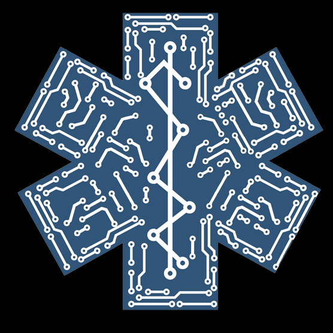
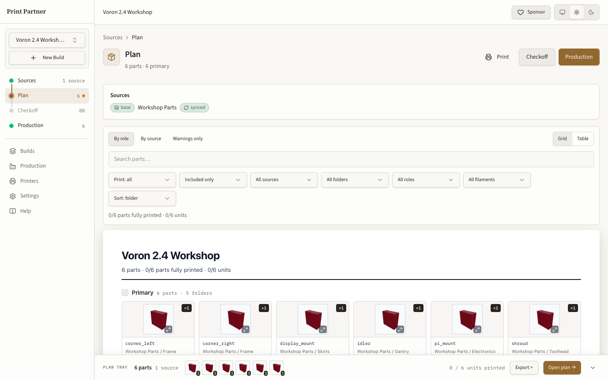
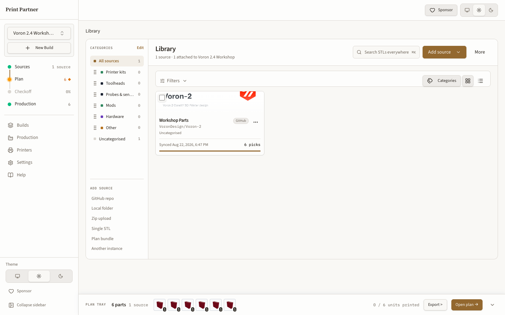
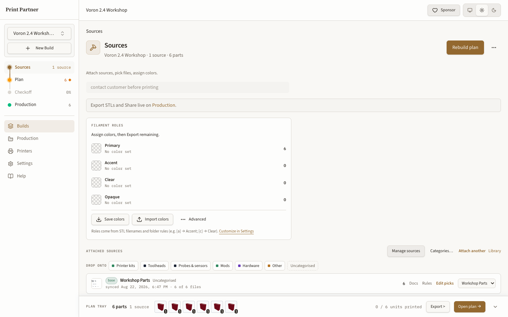
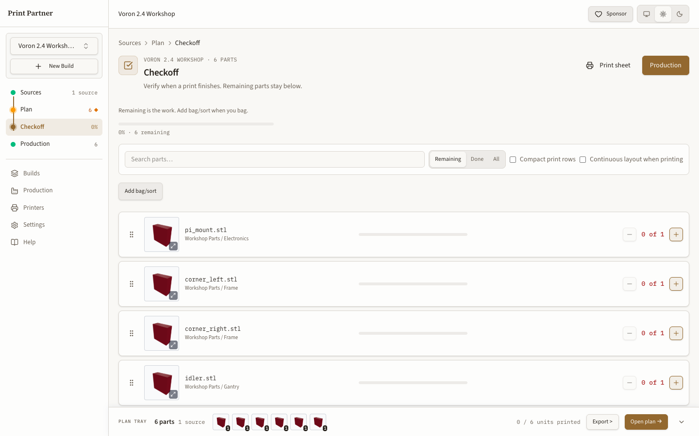
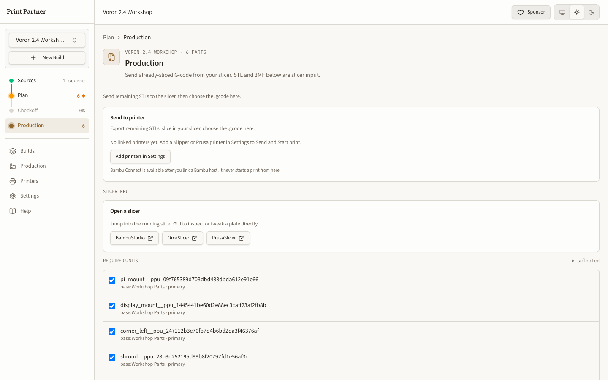

Shared source library
Register Git repositories, local folders, or zip files once, then reuse them across Builds.

Print PartnerSelf-hosted STL kit planning
Sync source repositories, choose parts, apply a Plan, track every unit, and prepare files for the printer without rebuilding the same spreadsheet for each kit.

Workflow
A Build carries the same accepted Plan through selection, Checkoff, and Production. Source revisions and Plate revisions make changes visible instead of silently replacing work.
Register Git repositories, local folders, or zip files once, then reuse them across Builds.
Review quantities and warnings in a draft before applying a new accepted revision.
Export 3MF or STL files, open a slicer, and send sliced jobs to Moonraker or PrusaLink.
Track printed and assembled quantities without losing the file and role that produced each unit.
Run the React app, API, SQLite database, and local storage in one Docker container.
Connect an external MCP client to read product state and submit write proposals for confirmation.
Screens
The images switch with your operating system theme.




Install
The default setup stores data in a named Docker volume and serves the app at port 8080.
git clone https://github.com/poitee/PrintPartner.git
cd PrintPartner
docker compose pull
docker compose up -d
# Open http://localhost:8080